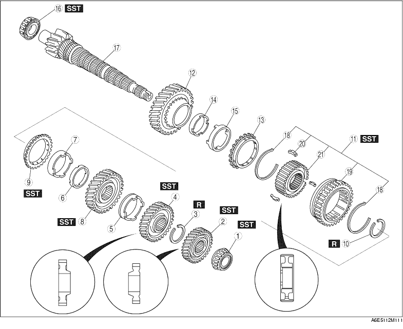

1. Disassemble in the order shown in the figure.

|
1 |
Bearing |
|
2 |
Secondary 4th gear |
|
3 |
Retaining ring |
|
4 |
Secondary 3rd gear |
|
5 |
Friction damper |
|
6 |
Inner cone |
|
7 |
Double cone |
|
8 |
2nd gear |
|
9 |
Synchronizer ring |
|
10 |
Retaining ring |
|
11 |
1st/2nd clutch hub compoonent (See 1st/2nd Clutch Hub Component, 1st Synchronizer Ring, and 1st Gear Disassembly Note) |
|
12 |
1st gear |
|
13 |
Synchronizer ring |
|
14 |
Inner cone |
|
15 |
Double cone |
|
16 |
Bearing |
|
17 |
Secondary shaft gear |
|
18 |
Synchronizer key springs |
|
19 |
Clutch hub sleeve (reverse gear) |
|
20 |
Synchronizer keys |
|
21 |
1st/2nd clutch hub |
1. Remove the bearing and secondary 4th gear using the SST.
1. Remove the retaining ring.
2. Shift the gears to 1st gear.
3. Remove the secondary 3rd gear and 2nd gear using the SST.
1. Remove the retaining ring.
2. Remove the 1st/2nd clutch hub component, 1st synchronizer ring, and 1st gear using a press.
1. Remove the bearing using the SST.